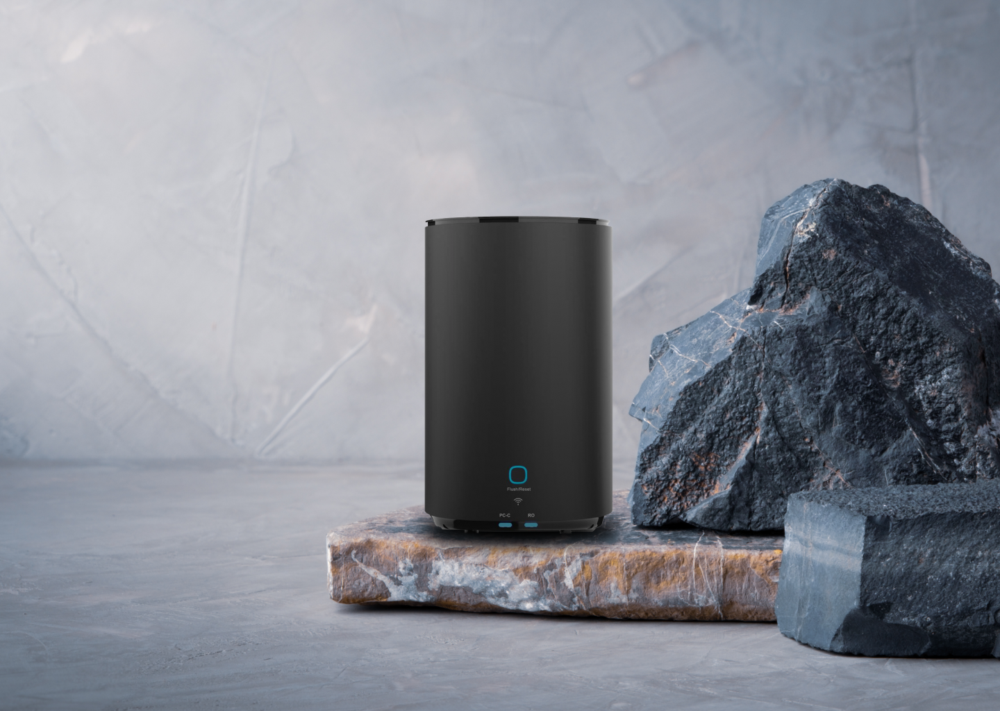
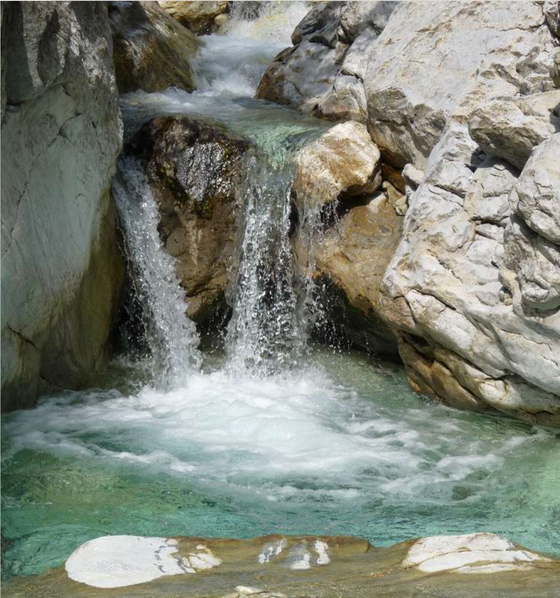
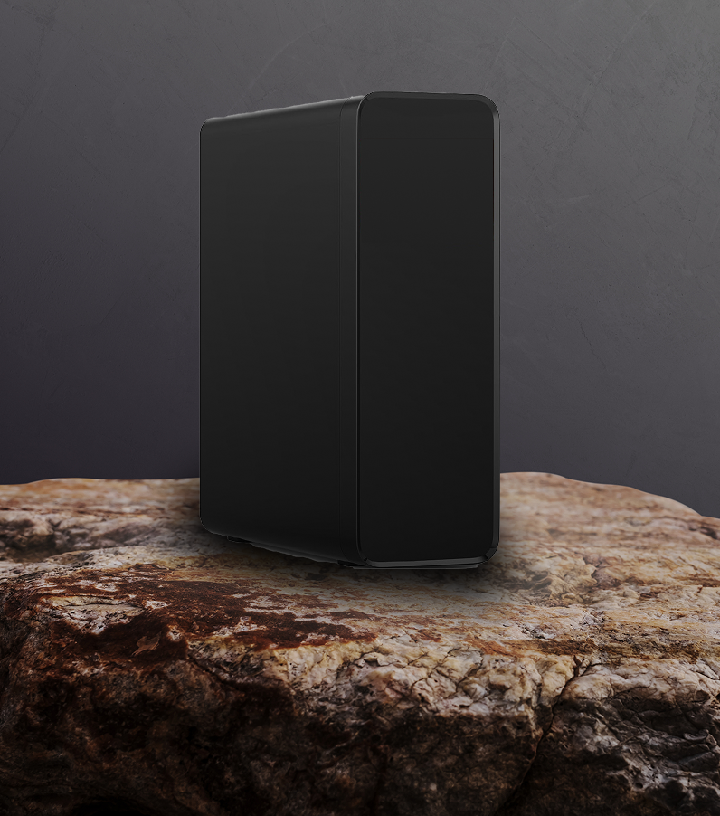
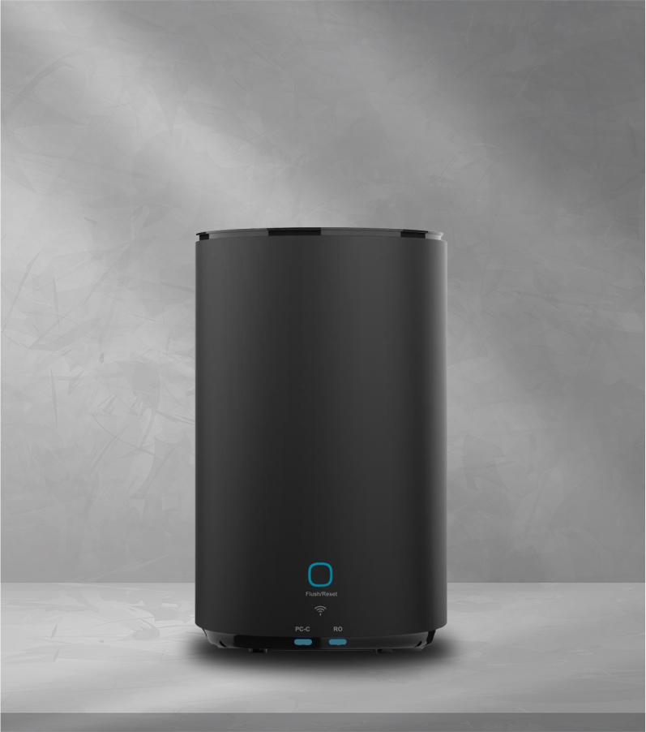
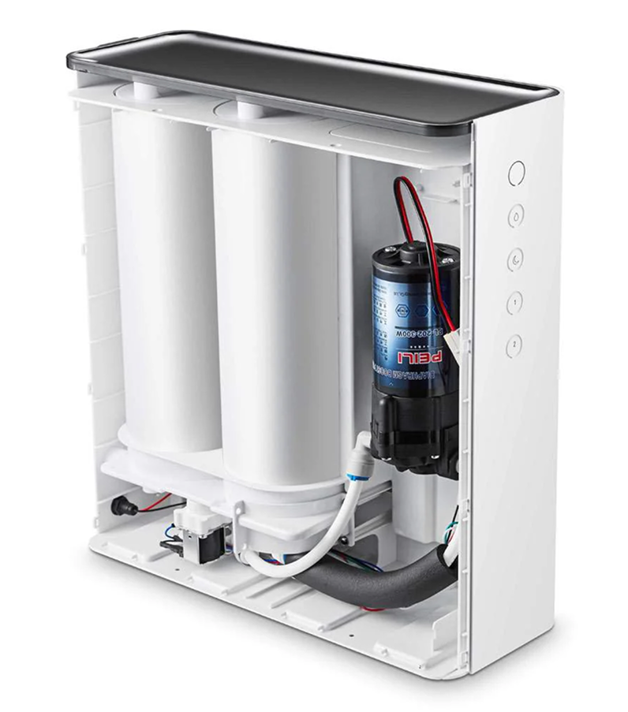
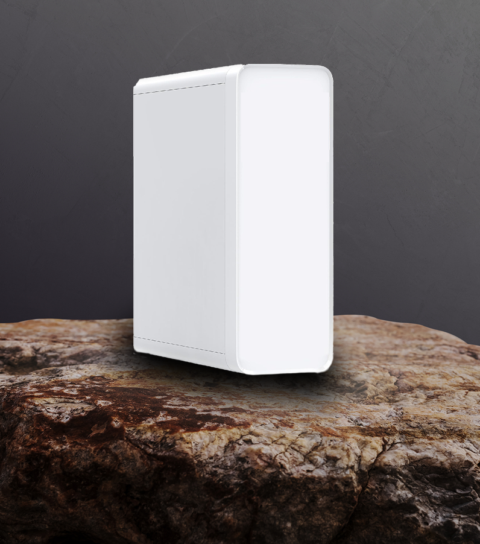
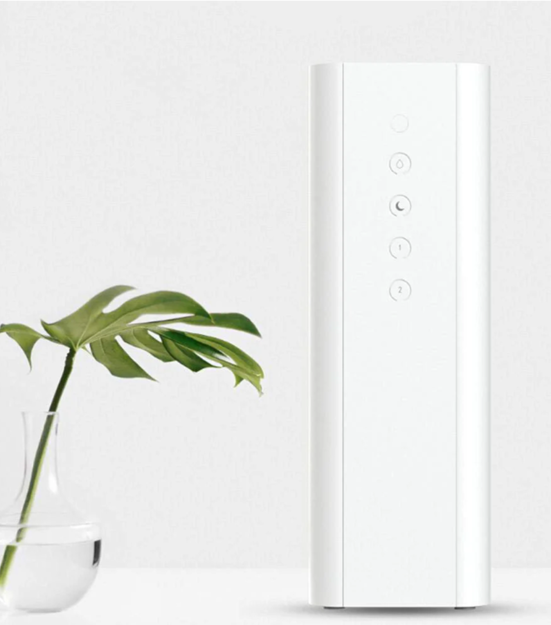
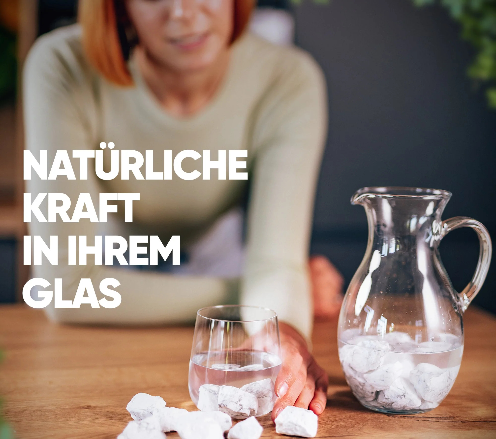
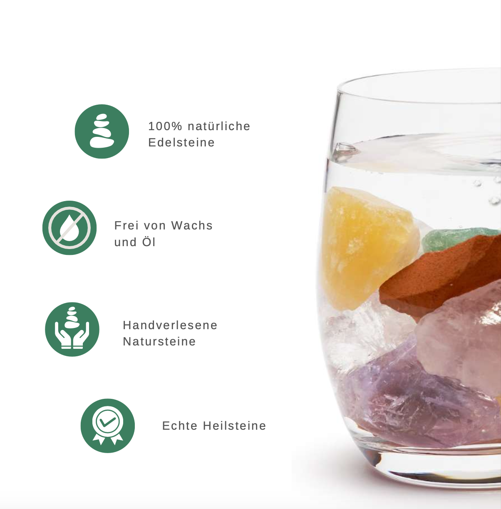
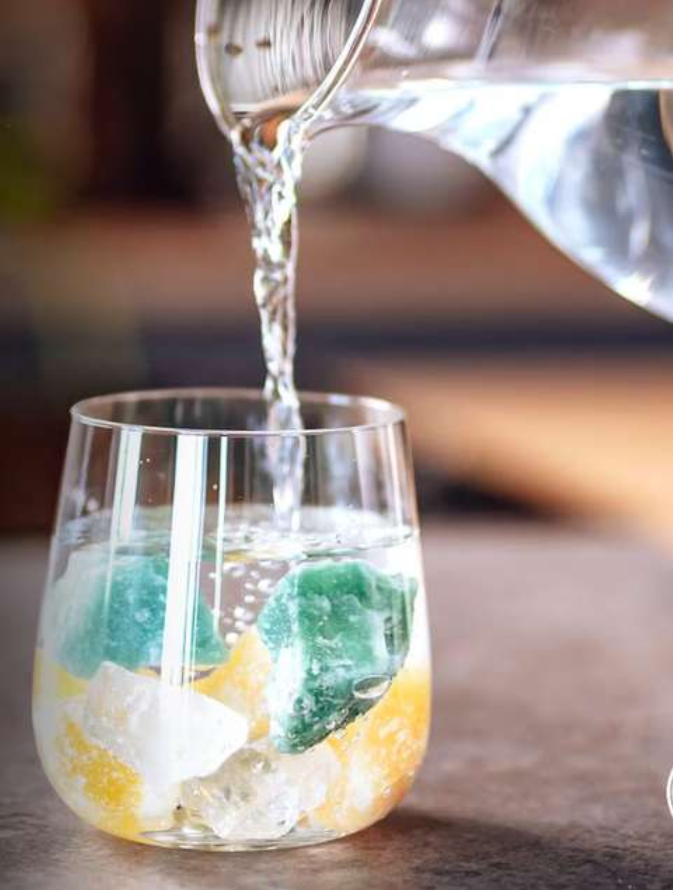

Fachgerechter Einbau direkt vor Ort
Unsere Techniker installieren Ihre Anlage schnell und professionell.
Erleben Sie reines
Wasser – jeden Tag.


Die Umkehrosmoseanlage ist ideal für jeden Haushalt, denn Sie bestimmen selbst die Qualität Ihres Wassers. Sie müssen nicht darauf vertrauen, ob tatsächlich zu jedem Zeitpunkt einwandfreies Trinkwasser aus Ihrer Wasserleitung kommt. Mit der Umkehrosmoseanlage erzielen Sie ein völlig neues Geschmackserlebnis.
Umkehrosmoseanlagen ohne Tank sind aus gesundheitlichen Gründen viel sicherer als Anlagen mit einem Vorratstank, denn dort können sich Keime und Bakterien bilden.
Bei Umkehrosmoseanlagen wird das Wasser durch eine vielschichtige Membrane gedrückt. Hier werden die Wassermoleküle von Schadstoffen und Verunreinigungen getrennt und die unerwünschten Stoffe ins Abwasser abgeleitet.
Durch das Vorschalten einer Antikalkpatrone schützen wir Bauelemente gegen Verkalkung. Eine nachgeschaltete Mineralisierungspatrone gibt dem Trinkwasser wieder Mineralien zurück.
Nach der Mineralisierung wird das Wasser zur natürlichen Verwirbelung durch ein Edelstahlwellrohr und ein Modul geleitet. Im Anschluss gelangt es über einen 1- oder 3-Wege-Wasserhahn zur Entnahme.
Wir empfehlen, den Tagesbedarf in geeignete Behälter aus Glas oder Edelstahl zu füllen und kühl sowie ohne direkte Sonneneinstrahlung zu lagern.
Wasseranalyse
max. Wasserkapazität – 2100 Liter/Tag, 1,5 Liter/Minute
Wasserleitungsdruck – mind. 1 bar, max. 4 bar
Wassertemperaturbereich – 5 °C bis 40 °C
Stromversorgung – AC 220V/50Hz/96W
Verhältnis Osmose zu Abwasser – max. 1:1
Abmessungen – 35 × 14 × 35,5 cm (H×B×T)
Einbaumaße – 37 × 16 × 37,5 cm (H×B×T)
Gewicht – ca. 12 kg
Automatische und manuelle Spülfunktion
8-stufiges Reinigungssystem
max. Wasserkapazität – 2100 Liter/Tag, 1,5 Liter/Minute
Wasserleitungsdruck – mind. 1 bar, max. 4 bar
Wassertemperaturbereich – 5 °C bis 40 °C
Stromversorgung – AC 220V/50Hz/96W
Verhältnis Osmose zu Abwasser – max. 1:1
Abmessungen – 24 × 40 cm (D×H)
Einbaumaße – 26 × 42 cm (D×H)
Gewicht – ca. 8 kg
Automatische und manuelle Spülfunktion


1. Stufe: Anti-Kalk-Patrone – Wechsel alle 6 Monate
2.–3. Stufe: Vorfilter – Wechsel alle 6 Monate
4. Stufe: 600-GPD-Membrane – Wechsel alle 1–2 Jahre
5. Stufe: Inline-Postfilter – Wechsel alle 6 Monate
6. Stufe: Mineralisierung – Wechsel alle 6 Monate

max. Wasserkapazität – 2100 Liter/Tag, 1,5 Liter/Minute
Wasserleitungsdruck – mind. 1 bar, max. 4 bar
Wassertemperaturbereich – 5 °C bis 40 °C
Stromversorgung – AC 220V/50Hz/96W
Verhältnis Osmose zu Abwasser – max. 1:1
Abmessungen – 35 × 14 × 35,5 cm (H×B×T)
Einbaumaße – 37 × 16 × 37,5 cm (H×B×T)
Gewicht – ca. 12 kg
Automatische und manuelle Spülfunktion
8-stufiges Reinigungssystem
max. Wasserkapazität – 2100 Liter/Tag, 1,5 Liter/Minute
Wasserleitungsdruck – mind. 1 bar, max. 4 bar
Wassertemperaturbereich – 5 °C bis 40 °C
Stromversorgung – AC 220V/50Hz/96W
Verhältnis Osmose zu Abwasser – max. 1:1
Abmessungen – 41,2 × 14 × 40 cm (H×B×T)
Einbaumaße – 43 × 16 × 42 cm (H×B×T)
Gewicht – ca. 9 kg
Automatische und manuelle Spülfunktion
1. Stufe: Anti-Kalk-Patrone – Wechsel alle 6 Monate
2.–3. Stufe: Vorfilter – Wechsel alle 6 Monate
4. Stufe: 600-GPD-Membrane – Wechsel alle 1–2 Jahre
5. Stufe: Inline-Postfilter – Wechsel alle 6 Monate
6. Stufe: Mineralisierung – Wechsel alle 6 Monate

Überall auf dem Planeten gibt es Wasser – im Meer, in Flüssen und in Pflanzen. Ein Leben ohne Wasser ist auch für uns Menschen unmöglich. In unserem Körper erfüllt es lebenswichtige Aufgaben.



Unsere Techniker installieren Ihre Anlage schnell und professionell.

Wir finden die beste Lösung für Ihre Küche oder Ihr Zuhause.

Sie wissen genau, wie Ihre Wasserveredelung funktioniert.

Auf Wunsch kümmern wir uns auch langfristig um Ihre Anlage.

Bei Baltic Wasserveredlung haben wir uns ein großes Ziel gesetzt: sauberes Trinkwasser, das in Qualität und Struktur natürlichem Quellwasser möglichst nahekommt.

Reinigung, Mineralisierung und Verwirbelung bilden die Leitidee unseres Systems.

Umkehrosmose bietet hohe Reinheit bei kompaktem Aufbau und überschaubarem Energiebedarf.

Die Aufbereitung wird um Mineralisierung und weitere technische Veredelungsschritte ergänzt.

Ausgewählte Edelsteine sind Bestandteil der bestehenden Produktkonzeption.

Auch Agnihotra-Asche ist Bestandteil der bisherigen Produktdarstellung.
Du suchst nicht nur einen Job, sondern eine sinnvolle Aufgabe? Bei Baltic Wasserveredlung arbeitest du an einer nachhaltigen Zukunft – mit moderner Technik, echten Werten und einem Team, das Zusammenhalt lebt.
Wachse mit uns – wir freuen uns auf deine Bewerbung!
Jetzt bewerbenDirk steht hinter der Idee, Wasser nicht nur zu filtern, sondern hochwertig aufzubereiten und Veredelungstechnik alltagstauglich einzusetzen.
0172-3043369
katti@baltic-wasserveredlung.de
Persönliche Beratung, ehrliche Kommunikation und passgenaue Lösungen stehen im Mittelpunkt.
Bereitschaftsdienst: 0151-70919472
verwaltung@baltic-wasserveredlung.de
Sie koordiniert den Ablauf vom ersten Kontakt bis zur Umsetzung.
Nehmen Sie bei Fragen gerne Kontakt mit uns auf, gerne beraten wir Sie zu unseren Produkten.
Grasweg 48, 24118 Kiel
0431 - 5402445 | 0172-3043369